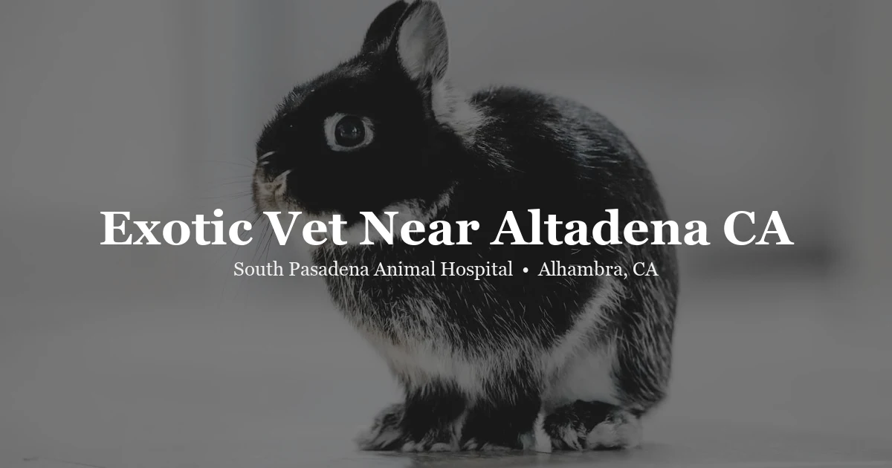

May 3, 2026 · 7 min read
Exotic Vet Near Altadena CA: Rabbits, Birds, and Reptiles

Altadena has a lot going for it — the hiking, the quiet residential streets, the sense of being close to the mountains without actually being in them. What it doesn't have is much in the way of exotic animal veterinary care. If you have a rabbit, bird, reptile, or guinea pig and you live in Altadena, you already know finding a vet who actually knows these animals is a project.
South Pasadena Animal Hospital is in Alhambra, about 20 minutes south of Altadena via Fair Oaks or Lincoln Avenue. We see a wide range of exotic pets regularly — not as a sideline to our dog and cat practice, but as a consistent and real part of what we do. This post is for Altadena pet owners who want to understand what care looks like for their specific animal before making the drive.
Our Altadena vet page has the short version. Call us at (626) 441-1314 if you want to confirm we can see your animal before scheduling.
The exotic animal gap in the Pasadena area
This is a real phenomenon, not a marketing line. The San Gabriel Valley has dozens of veterinary clinics, but the majority see dogs and cats almost exclusively. Some list "exotic animals" on their website and mean they'll see a guinea pig in a pinch. That's different from a clinic where exotic animals are a genuine regular part of the caseload — where the staff knows rabbit GI anatomy, bird handling techniques, and reptile metabolic disease without having to look it up.
For Altadena residents, the closest genuine exotic animal care options cluster around Pasadena, Alhambra, and further west into the Los Angeles basin. SPAH is among the closer ones. Twenty minutes on a non-emergency day is manageable; having a vet number you trust for a rabbit who stopped eating at 10 PM is genuinely valuable.
Rabbits — what good care looks like
Rabbits are the exotic pet most likely to be treated like a low-maintenance animal when they're actually anything but. They need more attentive care than most people realize going in — and they hide illness almost as effectively as birds do.
GI stasis is the emergency most rabbit owners eventually face. The rabbit digestive tract has to keep moving; when it slows or stops, gas builds, the rabbit stops eating and drinking, and things deteriorate fast. A rabbit that hasn't eaten or hasn't produced droppings for more than a few hours needs to be seen the same day. Not "let's see how tonight goes." Same day.
Routine rabbit care at SPAH includes annual wellness exams, dental checks (rabbit teeth grow continuously and can develop painful spurs and overgrowth), spay and neuter surgery, weight monitoring, and parasite prevention. Our rabbit vet page covers what a wellness visit involves and what to watch for at home.
A note on rabbit diet
About 80% of the rabbits we see are eating too many pellets and not enough hay. It sounds minor but it's one of the most common roots of rabbit dental disease and GI problems. Unlimited grass hay — timothy, orchard, or meadow — should be the foundation of a rabbit's diet. Pellets are supplemental. Most rabbit owners get this backwards, and it causes real problems over time. If your rabbit's vet has never brought this up, it's worth asking about.
Birds — what Altadena bird owners need to know
Altadena households often have parrots, cockatiels, or conures — sometimes multiple. Birds are rewarding but medically demanding, and their tendency to mask illness until they can't anymore means that by the time a bird looks visibly sick, the disease has often been present for days or weeks.
We see parrots (African Greys, Amazons, cockatoos, conures, macaws), cockatiels, budgerigars, lovebirds, canaries, finches, and doves. The most common issues we encounter include respiratory infections, feather destructive behavior, egg binding in female birds, and beak and nail problems. Full details are on our bird vet page.
For birds, annual wellness exams are genuinely important — not just a formality. Weight is weighed in grams; a 5% drop in a small bird is a meaningful signal. Feather quality, keel bone condition, and vent appearance are all part of a proper assessment. If your bird's last vet just glanced at it and sent you home, that's not the standard to hold.
Reptiles — bearded dragons, geckos, ball pythons, and more
Reptile medicine is its own discipline. Temperature gradients, humidity requirements, UVB lighting, and species-appropriate diet all directly affect health outcomes in ways that don't apply to mammals. A bearded dragon kept at the wrong ambient temperature or under the wrong UVB bulb will eventually develop metabolic bone disease — a preventable condition that's painful, expensive to treat, and common in animals that didn't have proper husbandry from the start.
We see bearded dragons, leopard geckos, crested geckos, ball pythons, blue-tongued skinks, and various other commonly kept reptiles. Husbandry reviews are a standard part of every reptile visit because the environment an animal lives in is often the root cause of why it's sick. Our reptile vet page has more on what to expect and what we treat.
Guinea pigs, chinchillas, and small mammals
Small mammals get overlooked in a lot of practices, partly because their problems are often subtle and partly because owners sometimes don't realize how much veterinary care they actually need. Guinea pigs are prone to dental disease (check for drooling, weight loss, or reluctance to eat hard foods), respiratory infections, and ovarian cysts in females. Chinchillas have very dense fur that masks body condition changes — a chinchilla that looks normal can have lost significant weight.
Hamsters have a short lifespan — 2 to 3 years on average — which means health problems tend to arrive quickly. Tumors, dental overgrowth, and wet tail are among the most common issues. If you have a hamster and haven't had a wellness exam, it's worth doing while the animal is healthy so you have a baseline.
Getting to SPAH from Altadena
The most direct route is Fair Oaks Avenue south through Pasadena, continuing through San Marino and into Alhambra. At Mission Road, you can cut over to Main Street. Total drive time is typically 20 to 25 minutes depending on traffic. Lincoln Avenue south is another option — it runs parallel to Fair Oaks and also connects Altadena to Alhambra without needing the freeway.
We're at 3116 W Main St, Alhambra, CA 91801, with parking in front of the building. To schedule an appointment for your exotic animal, call (626) 441-1314 or visit our contact page. You can also see our full list of exotic pets we treat on the services page.
Questions from Altadena exotic pet owners
Where is the nearest exotic vet to Altadena?
South Pasadena Animal Hospital in Alhambra is one of the closer options — about 20 minutes south via Fair Oaks Avenue or Lincoln Avenue. We're at 3116 W Main St, Alhambra, CA 91801. Call (626) 441-1314 to schedule.
What exotic animals does South Pasadena Animal Hospital treat?
We see rabbits, birds (parrots, cockatiels, conures, finches, lovebirds), reptiles (bearded dragons, leopard geckos, ball pythons, blue-tongued skinks), guinea pigs, chinchillas, hamsters, and tortoises. Call us if your species isn't listed and we can confirm whether we are able to see your animal.
My rabbit hasn't eaten in a day. Is that an emergency?
Yes. A rabbit that stops eating or producing droppings for more than a few hours may be experiencing GI stasis — a potentially life-threatening condition where the digestive tract slows or stops. Do not wait it out. Call a vet the same day.
Can I bring my bird to South Pasadena Animal Hospital from Altadena?
Yes. We see parrots, cockatiels, conures, budgerigars, finches, canaries, lovebirds, and doves from throughout the Pasadena and Altadena area. Take Fair Oaks Avenue south through Pasadena into Alhambra — typically 20–25 minutes depending on traffic.
Do you see reptiles from Altadena?
Yes. We treat bearded dragons, leopard geckos, ball pythons, blue-tongued skinks, crested geckos, and other commonly kept reptiles. See our reptile vet page for more, or call (626) 441-1314.